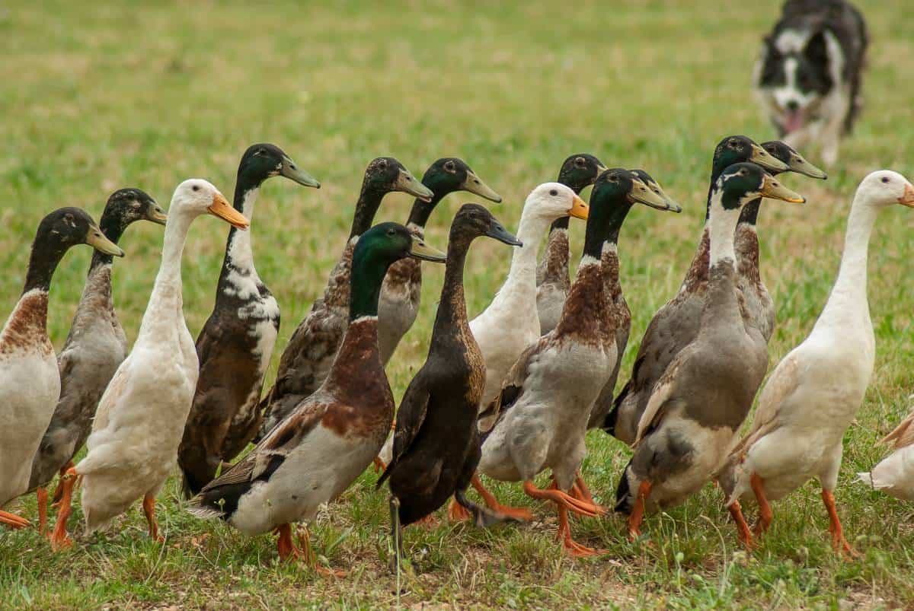
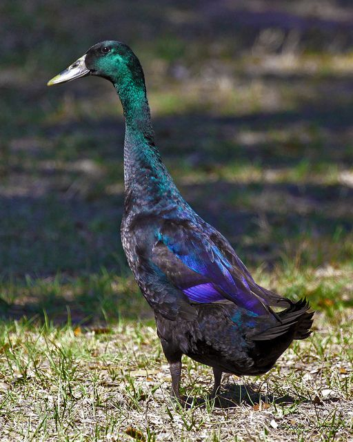

Vsebina te strani je delno povzeta po strani o Indijskih tekačicah na Wikipediji.
Indijske tekačice so pasma Anas platyrhynchos domesticus, domače race. Stojijo pokončno kot pingvini in namesto da bi racale, tečejo. Našli so jih na indonezijskih otokih Lombok, Java in Bali, kjer so jih prodajali kot nesnice ali za meso. Te race ne letijo in redko naredijo gnezda ter izležejo svoja jajca. Tečejo ali hodijo, pogosto pa jajca odložijo kjerkoli se nahajajo.

Indijske tekačice
Pokončna drža je posledica medeničnega obroča, ki je v primerjavi z drugimi pasmami domačih rac pomaknjen bolj proti repnemu delu telesa. Ta zgradbena značilnost omogoča, da se ptice gibljejo s hitro hojo namesto značilnega račjega, kakršnega vidimo pri drugih pasmah rac.
Indijske tekačice imajo dolgo, klinasto oblikovano glavo. Kljun se gladko zliva z glavo in je raven od konice do zadnjega dela lobanje. Glava je bolj plitva kot pri večini drugih pasem rac, kar daje pticam eleganten, športen videz, značilen za to pasmo. Oči so nameščene visoko na glavi. Indijske tekačice imajo dolg, vitek vrat, ki se gladko nadaljuje v telo. Telo je dolgo, vitko, a na videz zaobljeno. Perje je tesno prilegajoče se. Racaki imajo na konici repa majhen zavitek perja, medtem ko imajo race raven rep. Spola je težko razlikovati, dokler ptice ne dosežejo polne spolne zrelosti.
Teža in višina indijskih tekačic.| Samice | Samci | |
|---|---|---|
| Teža | 1.4-2.0 kg | 1.6-2.3 kg |
| Višina | 50-68 cm | 60-76 cm |

Modra indijska tekačica
Indijske tekačice so udomačene vodne ptice, ki izvirajo iz Malajskega otočja. Ni dokazov, da bi dejansko izvirale iz Indije. Tako kot pri mnogih drugih pasmah vodnih ptic, uvoženih v Evropo in Ameriko, se izraz "indijske" najverjetneje nanaša bodisi na nakladalno pristanišče bodisi na prevoz z ladjami vzhodnoindijske družbe.
Po navedbah Matthewa Smitha iz leta 1923 so uvozi v Cumbrii vključevali povsem rjave tekačice in povsem bele tekačice, pa tudi pisane različice (rjavo-bele in sivo-bele). Joseph Walton je med letoma 1908 in 1909 uspešno pripeljal ptice svežih linij z Lomboka in Jave, s čimer je temeljito oživil vzrejo, ki je bila že močno pomešana z lokalnimi pticami. Nadaljnji uvozi v letih 1924 in 1926 so prispevali k nadaljnji oživitvi pasme.